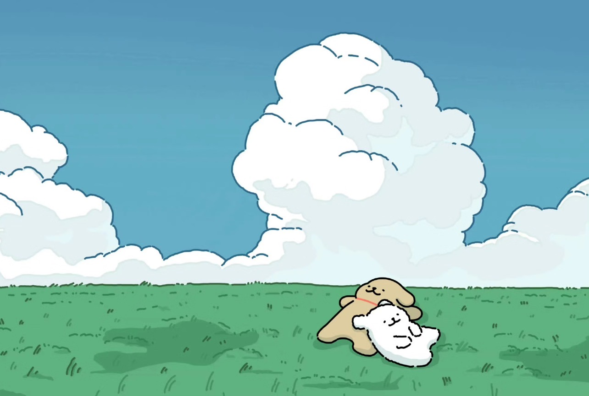

小白白是个爱撒娇的小狗狗，而小鸡毛呢，总是温柔又耐心地宠着他。
这天，小白白趴在窗边，看着外面阴沉沉的天，嘟囔着：“小鸡毛，今天的天怎么灰蒙蒙的，好像心情都变差了……” 小鸡毛走过来，轻轻用鼻子蹭了蹭小白白的耳朵，低声问：“小白白的心情也变灰了吗？” 小白白点点头，耳朵耷拉着，整只狗狗都蔫蔫的。小鸡毛想了想，突然张开爪爪，把小白白一把抱进怀里，用自己的大尾巴轻轻地盖在小白白身上，像是一张暖暖的毛茸茸小毯子。
“小白白不怕哦，小鸡毛抱着你，就会一直暖暖的。”
小白白愣了一下，感觉身上好像真的暖和了起来，鼻子里全是小鸡毛身上的味道，安心极了。他悄悄地在小鸡毛的胸口蹭了蹭，尾巴悄悄地摇了两下，嘴角也偷偷翘了起来。
窗外的天还是灰的，可是小白白的世界已经亮起来了。 